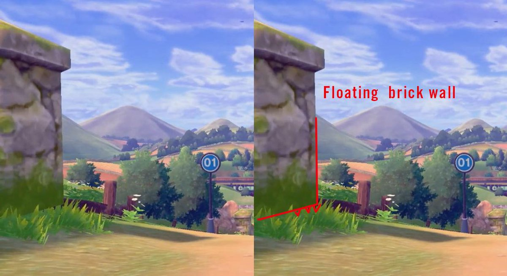
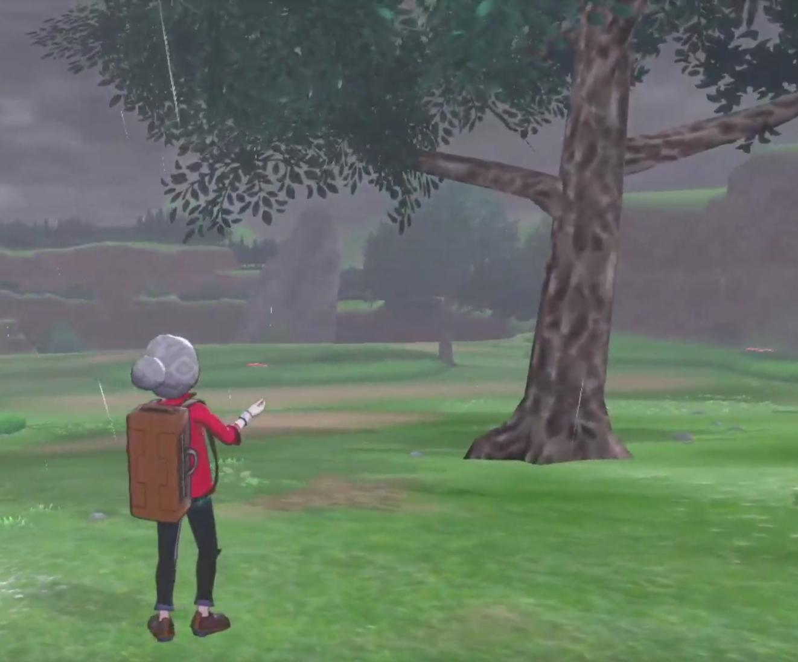
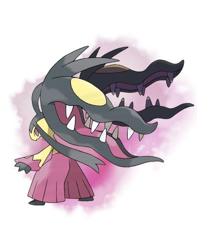
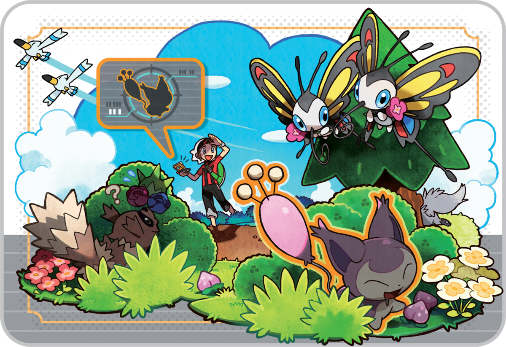

For a game series as long running as Pokémon, which debuted in 1996, it’s surprising how much goodwill many fans of the franchise still have as they enter their 30s and 40s. Nintendo and Game Freak continue to appeal to children new to the series as well. But after a harsh and sustained negative reaction to the announcement that Pokémon Sword and Shield will not allow players to transfer over every Pokémon from the series, instead favoring a select few and focusing on the Pokémon from the new region of Galar, it appears that this goodwill has run out. But understanding why involves a little more than just wrapping your head around the current controversy.
While fans are upset that they might have to leave their poor Trubbish behind, the announcement has also opened up a wellspring of resentment toward the ways that Game Freak and Nintendo have handled the franchise. Let’s start with the most recent issue and work back.
The National Dex—short for National Pokédex, which in turn is short for Pokémon Index—refers to an Index that catalogues every single Pokémon, ever. Sword and Shield will not have a National Dex, just a regional one, meaning that the game will not include every single Pokémon ever created, nor will you be able to transfer them all over.
In terms of things to be mad about, I understand this one. There are people who have painstakingly transferred Pokémon from game to game and grown attached to them. Pokémon as a franchise encourages you to form an emotional bond with your monsters. It does this through gameplay mechanics like Pokémon-Amie, which allows players to pet and feed their pocket monsters, and through the story, which generally is about becoming best friends with your ‘mons while beating Team Noun and defeating all the gym leaders. The players who have taken that idea to its logical conclusion are understandably upset that they might not be able to continue this tradition.
The National Dex is a representation of bigger issues that older players have had with the series, and in particular with Game Freak, the developer of the Pokémon franchise. Although fans have accused Game Freak of laziness regarding the decision not to have a National Dex in Sword and Shield, that complaint has become a stand-in for all the complaints that Pokémon fans have about the series.
In particular, fans have latched onto a comment from Junichi Masuda, Pokémon’s composer and series producer, that said they were focusing on character models and animations, and therefore decided not to animate every character. Since then, fans have been especially judgmental of every single character animation that they’ve seen so far, like Wingull animation for the overworld, which, yeah, looks pretty bogus.
Sorry, hypothetical reader! It’s hard to explain what they’re mad about because it is so many things, and also kind of everything.
 Pokémon, as a game, has thrived in part because it banks on the nostalgia of the people who played the first game, while also appealing to children. But while the Pokémon fans have grown up, gotten older, and maybe had kids of their own, the games have not necessarily grown with them.
The example I always use to explain this is the process of catching a Pokémon, which has gone almost unchanged since the first game. In order to catch a Pokémon, you have to battle it to lower its health and then throw a Poké Ball at it. So far, so good—it’s a winning formula and now a staple of the series.
In the first Pokémon game, in order to throw a Poké Ball, you had to open up the items menu, scroll to a Poké Ball, and select it to throw it. Later games would turn the item menu into a physical bag, separated into pockets. In those games, in order to throw a Poké Ball, you would have to open the Bag, go to the Poké Ball pocket, and then select a Poké Ball and throw it.
It’s only the most recent additions to the franchise that have tried to expedite this process. Starting with Diamond and Pearl, the last item you used would appear on the battle menu alongside the other options, making it easier to throw a Poké Ball quickly… unless, say, you had just gotten out of a battle and used a Potion, meaning you’d have to go back into menu hell just to try to catch a damn Pokémon. It confounds me, to this very day, that there is no dedicated Poké Ball-throwing button in a video game about catching Pokémon.
You’re right. It isn’t a big deal. It’s just that I have been playing this game since I was roughly 7 years old, and many aspects of it have not changed at all. Yes, there are now over a thousand Pokémon. There are new friends to make and regions to explore. That does very little to distract from the fact that the games are generally pretty much the same. While the National Dex isn’t something that’s important to me, I feel a kinship with those fans’ frustration because I, too, wish the game would make some more radical changes. The amount of time it took for the smaller changes to happen just aggravates that frustration.
On the one hand, having constants in a series is very comforting. On the other hand, I am turning 30 this year, and while I love simple games, the things that have endured in the Pokémon series aren’t all good—basically everything is unchanged, including the bad UI from the early games.
Yes, Pokémon Sun and Pokémon Moon made huge changes to the Pokémon formula by getting rid of Gyms, which were replaced by Trials. I really liked this. A lot of other fans vocally did not. If you’ve been playing largely the same game for nearly two decades, that much change at once can be pretty jarring.
Sword and Shield is a swing in the opposite direction, returning to what fans are familiar with, but that also means inheriting the series’ old problems.
These new battle mechanics can be pretty fun—at least, they’re a fun spectacle for the kids to coo at—but when you’ve dedicated dozens of hours to becoming Pokémon champion, they don’t actually feel well-integrated. The Pokémon formula is now so set in stone that any new dimension stands out like a sore thumb. Although I liked what I played of Sword and Shield’s demo at E3, including how Dynamaxing changes up my battle strategy, it is hard to ignore the fact that this game is designed to make your Pokémon really big, but only in super-specific contexts.
Z-Moves, introduced in Sun and Moon, felt the same way to me. Although I like the idea of a special, blowout, once-per-battle spectacle, in practice, Z-Moves were basically just regular moves with a super-long animation. Mega Evolutions are a little bit cooler, and fans seem fonder of that added feature than others, but there won’t be any Mega Evolutions in Sword and Shield.
Game freak has been this habit of creating new functions for their games ( Like the Dexnave of ORAS ) which are great and then removing them in the next instalment, that's one of the reasons why the fans are starting to get upset with the Developers for always making the next-gen feel empty and lacking compared to the older ones.
Mainly, this drama is about the tension of a desire to indulge in nostalgia against a desire to experience more complexity. Try as they might, Pokémon isn’t that deep, and making it any more complex risks alienating new players. You can thread that needle, but it’s hard, especially when the franchise in question is beloved around the world and has been for 20 years. Fans are going to continue to be mad until Game Freak figures out how to please everyone, so I’m guessing they’ll be mad until the heat death of the universe.
Original article